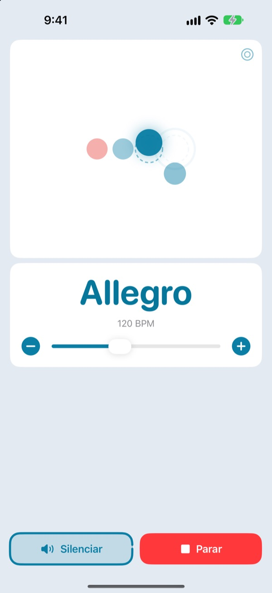
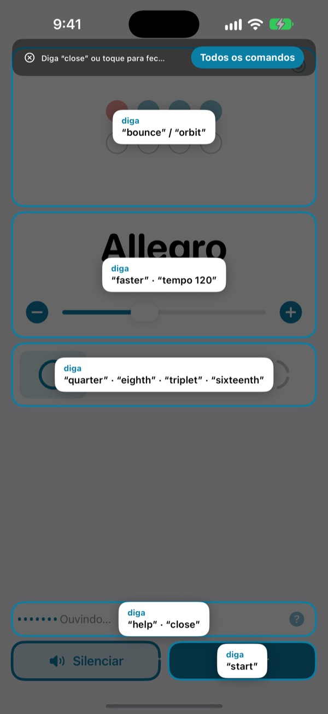
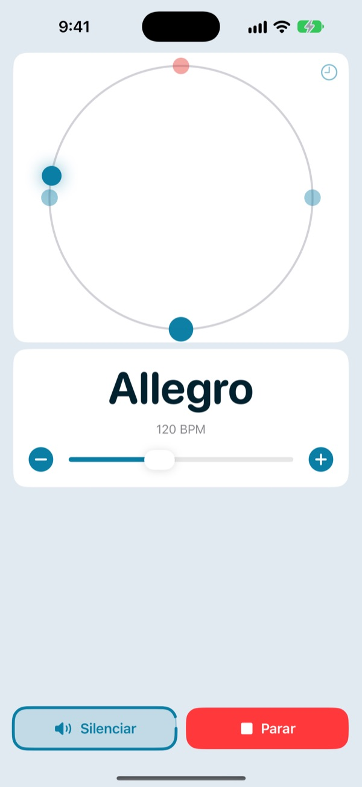
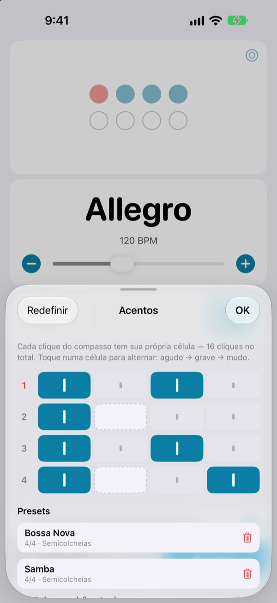

As mãos no instrumento,
o andamento na voz
Diga faster no meio da frase e o clique acelera. Os comandos são palavras curtas em inglês, e você não precisa parar de tocar para mudar o andamento.
O metrônomo completo e o controle por voz são grátis.

Teste falando
Toque em uma frase ou ligue o microfone e fale em inglês. Aumente o volume, porque o clique toca de verdade.
Já perdeu o groove só para mexer no andamento?
Você larga o arco, prende a palheta nos dentes, toca duas vezes na tela e a levada que tinha acabado de encaixar some. O Not My Tempo muda o andamento com uma palavra, sem você sair da posição.
Falou, ele acompanha
Palavras curtas em inglês, como start, faster e tempo 120. Ele já escuta assim que você abre o app, sem ativar o Controle por Voz do iOS nem nenhum ajuste de Acessibilidade.
Esqueceu um comando? Diga help e tudo o que dá para falar aparece na tela.

A batida também na tela
Escolha entre bola quicando, órbita ou anel. O primeiro tempo do compasso aparece em vermelho e soa mais forte.
Toque no ritmo na órbita e veja o quanto você chegou perto.

Os acentos de cada música, salvos
Deixe cada clique do compasso agudo, grave ou mudo e salve como preset. Monte a levada de bossa nova ou de samba uma vez e, na próxima, é só escolher. (Pro)

Comece em três passos
- 1
Abra o app
Ele já começa a ouvir sozinho.
- 2
Libere o microfone
Só na primeira vez ele pede acesso ao microfone e ao reconhecimento de fala.
- 3
Fale ou toque
Todo comando também tem um botão na tela.
O que você pode dizer
- start · stop
- tocar, pausar
- faster · slower
- subir ou descer 5 BPM
- up · down
- subir ou descer 1 BPM
- tempo 120
- ir direto para um andamento
- double · half
- o dobro, a metade
- three beats
- mudar o compasso
- quarter · eighth · triplet · sixteenth
- semínimas, colcheias, tercinas, semicolcheias
- louder · quieter · mute
- clique mais alto, mais baixo ou mudo
- volume 60
- definir o volume em porcentagem
- bounce · orbit
- trocar o visual da batida
- timer 5 minutes
- definir um timer de estudo
- practice
- subir o andamento aos poucos enquanto você estuda (Pro)
- tune
- abrir o afinador (Pro)
- help
- ver todos os comandos
- close · done
- fechar um painel
O reconhecimento de voz funciona em inglês (EUA), então os comandos são falados em inglês. O resto do app fala português, e tudo também funciona pelos botões.
O metrônomo é grátis. O Pro fica para quando você quiser mais.
Grátis
- Todos os comandos de voz
- Compassos de 1 a 8 tempos, com o primeiro acentuado
- Subdivisões em semínimas, colcheias, tercinas e semicolcheias
- Visuais de bola quicando, órbita e anel
- Tap tempo e teste de timing
- Timer de estudo
Not My Tempo Pro
- Modo de estudo: sobe alguns BPM a cada poucos compassos até chegar na sua meta
- Editor de acentos com presets para cada música
- Afinador cromático
Assinatura anual com teste grátis, ou compra vitalícia com pagamento único
O controle por voz e os recursos de acessibilidade continuam grátis para todos. Comprou o app antes do Pro? Todos os recursos Pro já são seus.
Perguntas frequentes
Posso falar em português?
O reconhecimento de voz funciona em inglês (EUA), então os comandos são palavras curtas em inglês, como start e faster. Dá para pegar o jeito rapidinho, e todo comando também tem um botão na tela.
Ele não está me ouvindo.
Veja se o status do microfone mostra Ouvindo. Se estiver desligado, toque em Ouvir. Em lugares barulhentos ou com caixa de som alta, use fones de ouvido para o clique não vazar no microfone.
O app parou de ouvir sozinho.
Para economizar bateria, ele para de ouvir depois de alguns minutos sem comandos. Toque em Ouvir para ligar de novo.
O andamento saiu no dobro ou na metade.
Diga double ou half para corrigir na hora.
Como uso o afinador?
Diga tune ou toque no botão de onda no cartão de andamento. Toque uma nota: quando o indicador cair na faixa verde, você está afinado. Diga close para sair.
Eu já uso o Controle por Voz do iOS.
Desligue o microfone do app e comande pelos nomes dos botões. Todos os controles têm rótulos para o VoiceOver.
Minha voz é enviada para algum lugar?
Não. A fala é reconhecida no próprio aparelho e nunca é gravada, armazenada nem enviada. O metrônomo, o controle por voz e o afinador funcionam sem internet.
Como cancelo a assinatura?
Em Ajustes > Conta Apple > Assinaturas. O plano anual é renovado automaticamente, a menos que seja cancelado com pelo menos 24 horas de antecedência do fim do período. O vitalício é uma cobrança única.
Dúvidas ou sugestões? Escreva para leeo@kakao.com.